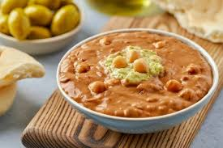
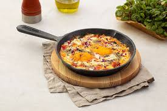
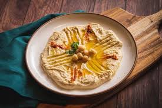
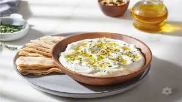

الفول المدمس

المكونات:
- 2 كوب فول
- 2 ملعقة كبيرة زيت زيتون
- 1/2 ليمونة معصورة
- ملح وكمون حسب الذوق
الخطوات:
- سخن الفول في قدر صغير.
- أضف زيت الزيتون والليمون والملح والكمون.
- حرك جيدًا وقدمه مع الخبز.
الشكشوكة

المكونات:
- 3 بيضات
- 2 طماطم مفرومة
- 1 بصلة صغيرة مفرومة
- 1 فص ثوم مفروم
- ملح وفلفل حسب الذوق
الخطوات:
- في مقلاة، سخن القليل من الزيت وقلب البصل والثوم حتى يذبلا.
- أضف الطماطم واتركها تطبخ حتى تتكثف.
- اكسر البيض فوق الخليط واتركه يطهى على نار هادئة.
- قدم الشكشوكة ساخنة مع الخبز.
الحمص

المكونات:
- 1 كوب حمص مسلوق
- 2 ملعقة كبيرة طحينة
- 1/2 ليمونة معصورة
- 1 فص ثوم
- ملح حسب الذوق
الخطوات:
- اخلط جميع المكونات في الخلاط حتى تحصل على قوام ناعم.
- قدم الحمص مع زيت الزيتون وزينه بالبابريكا.
اللبنة

المكونات:
- 1 كوب لبن زبادي مصفى
- 2 ملعقة كبيرة زيت زيتون
- زعتر للتزيين
- ملح حسب الذوق
الخطوات:
- ضع اللبن المصفى في طبق.
- رش الملح وزيت الزيتون على الوجه.
- زين بالزعتر وقدمه مع الخبز.